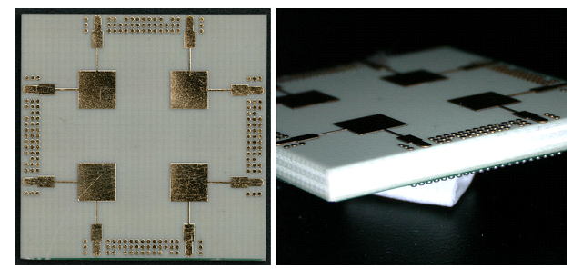
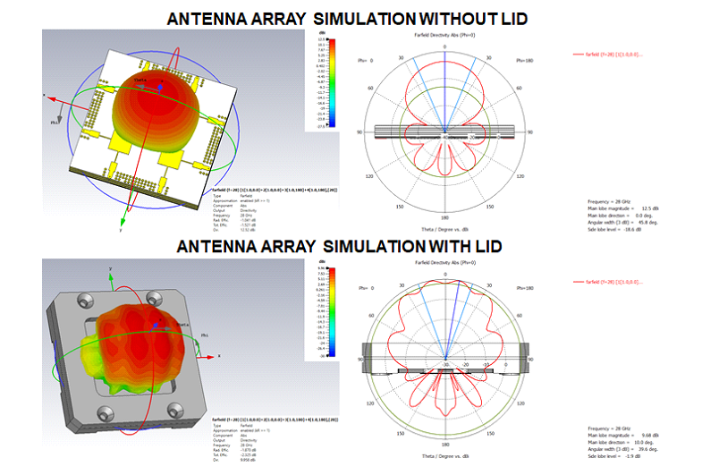
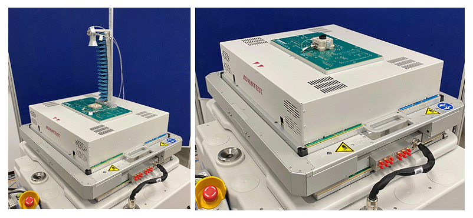
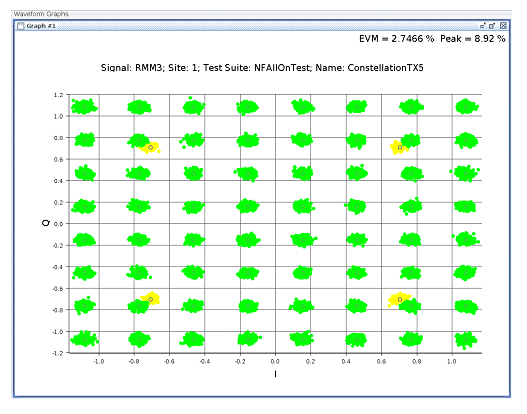

This article is a condensed version of an article published in the November-December 2020 issue of Chip Scale Review, p. 31. Adapted with permission. Read the original article at https://www.chipscalereview.com/issues/ChipScale_Nov-Dec_2020-digital.pdf#page=33.
Jose Moreira, Advantest Senior Staff Engineer, SoC R&D.
This article is a follow-up to an article [1] where we described options for high-volume over-the-air (OTA) testing of antenna-in-package (AIP) modules with automated test equipment (ATE). In this follow-up article we present measurement results for two OTA testing approaches: far-field and radiating near-field OTA. But before we go to the measurement results, we need to first define an AiP device under test (DUT) that can be used for the measurements.
Creating an AiP Evaluation Vehicle
Proper evaluation of an ATE OTA measurement setup requires an AiP module. Using, for example, a reference antenna instead of an AiP DUT (for instance, a reference horn antenna) would not take into account all the components specific to an ATE implementation like the DUT test-fixture PCB or the DUT socket. Using a commercial AiP module is also not currently feasible, since few available commercial AiP modules are would come with IP restrictions on using them to publicly show OTA measurement results.
Therefore, we decided to create the simple AiP module shown in Figure 1. It was manufactured in a multilayer PCB with a Rogers 4350B top layer and a BGA ball grid array on the bottom. The antenna array is composed of a 2 by 2 array of dual polarized patch antennas [2]. They are microstrip-feed with two quarter-wavelength transformers for impedance matching. This antenna design is narrow-band, was tuned for 28 GHz, and can support our 100-MHz measurement modulation range. We used a 0.4-mm pitch for the BGA array on the bottom of the PCB. Note that AiP modules come in a multitude of package types [3]. We chose this one because it was the simplest to design and manufacture.
Figure 1: Simple antenna in package module demonstration vehicle for OTA measurements.
Because we designed the antenna array using a microstrip feed (for simplicity), we needed to supply a waveform with a 180-degree phase difference on both sides of the array for each polarization to obtain an antenna beam that is in the horizontal direction. By selecting the appropriate phase difference, we could move the beam direction as expected from an AiP phased-array antenna. One critical point on OTA testing of AiP modules with ATE is that a DUT socket is always a must. The challenge is that the socket lid will have an impact on the antenna array beam, as shown in Figure 2. . One can only try to minimize its impact by the proper design of the socket and its material selection (especially the lid), but at the same time there are other conflicting requirements in a high-volume production test cell. These include, for example, supporting hot and cold testing as well as guaranteeing a proper electrical contact into the electrical side of the socket even in the presence of a small package warpage.
Figure 2: Socket lid impact in the AiP module antenna array beam.
An additional requirement to achieve a complete AiP module emulation is the active part—that is, the silicon die. To emulate that part, we used an external evaluation board (Anokiwave 0151-DK), which provides four dual-polarized RF channels with independent phase and gain control of each channel. With this complete setup shown in Figure 3, we can fully emulate the OTA testing of an AiP module. In the ATE system used for the presented measurements, only two ATE mmWave measurement channels were available. Therefore, we used a solid-state switch to switch between polarizations.
Figure 3: Block diagram of the used ATE OTA measurement setup.
Figure 4 shows the DUT test fixture (or loadboard) with the far-field socket installed but without a DUT. For the electrical side of the AiP module we used an elastomer socket because we needed to support 28-GHz signaling. The DUT test fixture is a simple mmWave design with the signals from the Anokiwave evaluation board connected to the DUT AiP via a microstrip trace. We also implemented some auxiliary test and calibration structures. The Anokiwave evaluation board resides on a garage space bellow the DUT test fixture. It is powered by the ATE power supplies, and it is programmed with ATE digital channels using an SPI interface. Figure 5 shows the ATE system configured for far-field and radiating near-field OTA measurements. All the measurements presented were performed using an Advantest V93000 Wave Scale mmWave ATE system.
Figure 4: DUT test fixture.
Figure 5: ATE measurement setup showing the far-field setup (left) and radiating near-field setup (right).
Before we proceed, we need some reference numbers for the far-field distance from the antenna array. Figure 6 shows the AiP antenna-array dimensions. It also shows a computation of the far-field distance using the Fraunhofer distance equation [4]. The computed far-field starting distance is 32 mm for this case.
Figure 6: Far-field distance computation for the antenna array.
Results with a Far-Field OTA Measurement Setup
In the far-field setup (Figure 5, left), the measurement antenna is a dual-polarized horn antenna (Ainfo LB-SJ-180400) located 10 cm from the DUT AiP (clearly within the far-field zone). We know the measurement antenna gain, and since the measurement antenna to DUT distance is fixed, we also know the air-loss. We can use these values to calibrate the measured results. Figure 7 shows the measured error vector magnitude (EVM) and corresponding constellation diagram measurement of the AiP DUT using a 28-GHz 5G QAM64 waveform with 100-MHz modulation bandwidth. This measurement is performed with the entire antenna array transmitting and pointing in the horizontal direction to the measurement antenna. Only the H-polarization field is measured (see Figure 3).
As previously mentioned, this AiP device is intended to be a demonstration vehicle; due to its simplistic design one cannot expect good performance. This measurement setup is straightforward and provides an easy way to correlate with a 5G-compliant bench measurement setup. Although the far-field OTA measurement setup is excellent for characterization, as discussed in [1], it presents major challenges for test-cell integration in a multisite high-volume testing setup due to its mechanical requirements.
Figure 7: Measured transmitted far-field EVM and constellation diagram of a 28-GHz 5G QAM64 waveform (100-MHz modulation bandwidth) for H-polarization.
Results with a Radiating Near-Field OTA Measurement Setup
In the radiating near-field setup (Figure 5, right), a dual-polarized patch measurement antenna is used on the socket (as shown in Figure 4 of [1]). This measurement antenna is set 11 mm from the AiP DUT, so it is within the near-field region as shown in the Figure 6 computations. The 11-mm distance was selected based on the standing-wave effect that is present on any radiating near-field OTA setup as described in [1,5]. Figure 8 shows the EVM and constellation diagram measurement of the AiP DUT in the exact same conditions as for the far-field measurements shown in Figure 7.
Figure 8: Measured transmitted radiating near-field EVM and constellation diagram of a 28-GHz 5G QAM64 waveform (100-MHz modulation bandwidth) for H-polarization.
Figure 8 shows a measured 2.76% EVM value for the radiating near-field, while the far-field EVM measured result (Figure 7) was 2.74%. Although in this example the EVM results correlate, for a different AiP module with a different antenna array or a different design of the measurement antenna and its distance to the DUT, the difference between a far-field and radiating near-field OTA measurement setup might be significant. Other issues relate to calibration, and other possible measurements include phase linearity and ACLR, as described in [7].
Summary
OTA testing with ATE is possible in different configurations: in the far-field, radiating near-field, and reactive near-field as described in [1]. An OTA loopback configuration can also support OTA testing in some circumstances. We have shown that parametric measurements can be done in the radiating near-field if careful attention is placed on the measurement antenna design and also on the choice of the distance between the DUT and the measurement antenna. In the radiating near-field case a straightforward value correlation is not always possible with the far-field. But in a production setup, the important task is to be able to differentiate good from bad devices, and that is achievable with a radiating near-field OTA configuration. As shown in [1], the radiating near-field has significant advantages for high-volume production in terms of complexity and cost.
Acknowledgements
We would like to thank Sui-Xia Yang and Frank Goh from Advantest for the test-program development and also for the measurements execution. We would also like to thank Natsuki Shiota, Aritomo Kikuchi, Hiromitsu Takasu, Hiroyuki Mineo, and Yasuyuki Kato from Advantest for their technical contribution for this project. We would like also to thank Prof. Jan Hesselbarth from the University of Stuttgart for his continuing collaboration on OTA testing.
References
-
J. Moreira, “Testing AiP Modules in High-Volume Production for 5G Applications,” Chip Scale Review, May/June 2020.
-
Kim-Lu Wong, “Compact and BroadBand Microstrip Antennas,” Wiley, 2002.
-
Curtis Zwenger, Vik Chaudhry, “Antenna in package (AiP) technology for 5G growth,“ Chip Scale Review March/April, 2020.
-
Meik Kottkamp, et al., ”5G New Radio Fundamentals, Procedures, Testing Aspects,” Rohde & Schwarz.
-
J. Moreira, J. Hesselbarth, K. Dabrowiecki, “Challenges of over the air (OTA) testing with ATE,” TestConX China, Shanghai, Oct. 29, 2019.
-
C. Parini et al., Theory and Practice of Modern Antenna Range Measurements, IET 2014.
-
J. Moreira, “Testing AiP modules in high-volume production for 5G applications,” Chip Scale Review, November-December 2020, p. 31.





